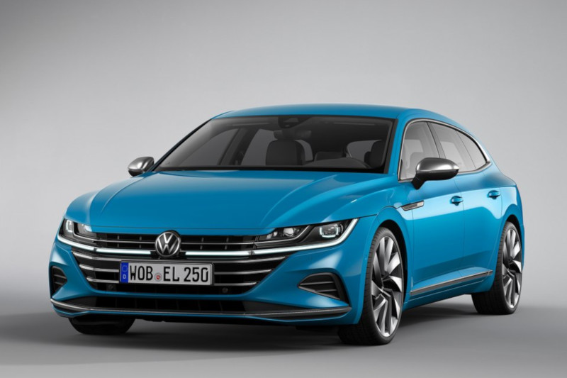

- Samochody BMW
- Samochody volkswagen
- Samochody Mercedes-Benz
- Samochody Audi
Bmw seria7
Bmw seria 7-samochód osobowy klasy luksusowej produkowany pod niemiecką marką BMW od 1977 roku. Od 2015 roku produkowana jest szósta generacja modelu.BMW serii 7 I to pierwszy model o tej nazwie i zarazem od samego początku najbardziej luksusowy samochód w gamie BMW. Wyprodukowano 285 029 egzemplarzy modelu. W plebiscycie na Europejski Samochód Roku 1978 samochód zajął 2. pozycję (za Porsche 928). Wszystkie modele BMW E23 wyposażane były w silniki sześciocylindrowe w układzie rzędowym. Najpierw produkowane były modele 728, 730 i 733i, których silniki pochodziły jeszcze od poprzednika – modelu BMW E3.
BMW X1
BMW X1 – samochód osobowy typu crossover klasy kompaktowej produkowany pod niemiecką marką BMW od 2009 roku. Od 2015 roku produkowana jest druga generacja modelu.BMW X1 zadebiutowało w lecie 2009 roku jako pierwszy tak mały model tego typu w historii marki. W 2012 roku auto przeszło delikatny face lifting. Przestylizowano przedni zderzak, zastosowano nowe wkłady reflektorów, zmieniono tylny zderzak oraz światła. W grudniu 2013 roku auto delikatnie odświeżono. Dodano m.in. światła do jazdy dziennej wykonane w technologii LED do każdej wersji wyposażenia, nowe wzory felg i lakierów nadwozia. Zaktualizowano system teleinformacyjny oraz wzbogacono wyposażenie. Podczas targów motoryzacyjnych w Detroit w styczniu 2014 roku zaprezentowano BMW X1 po delikatnych modernizacjach. Zmieniono m.in. oprawę przednich wlotów powietrza na błyszczącą, nowy wzór 17-calowych obręczy, nowy odcień lakieru oraz warianty wykończenia kokpitu.

BMW M4
BMW M4 – model auta sportowego marki BMW serii 4, następca modelu E92 BMW M3. Samochód został oficjalnie zaprezentowany jako koncept na konferencji prasowej BMW w Monachium 15 sierpnia 2013[. Oficjalna produkcja ruszyła z dniem 27 lutego 2014 roku.
Touareg
Volkswagen Touareg − samochód osobowy typu SUV klasy wyższej produkowany pod niemiecką marką Volkswagen od 2002 roku. Od 2018 roku produkowana jest trzecia generacja pojazdu.olkswagen Touareg I został po raz pierwszy oficjalnie zaprezentowany podczas targów motoryzacyjnych w Paryżu w 2002 roku. Nazwa Touareg wywodzi się od nazwy ludu berberyjskiego - Tuaregowie, który zamieszkuje obszary Sahary. Samochód zbudowany został we współpracy z należącą do Volkswagen AG marką Porsche, która produkuje bliźniaczy model Cayenne na wspólnej płycie podłogowej PL71. Pojazd zbudowano na samonośnym nadwoziu wyposażonym w niezależne zawieszenie wielowahaczowe, oparte na solidnych ramach pomocniczychArteon
Volkswagen Arteon – samochód osobowy klasy średniej produkowany pod niemiecką marką Volkswagen od 2017 roku.Samochód został po raz pierwszy oficjalnie zaprezentowany 7 marca 2017 roku podczas targów motoryzacyjnych w Genewie. Nazwa Arteon pochodzi od połączenia dwóch słów: "Art" (pol. – sztuka) oraz "eon", który nawiązuje do luksusowego modelu Phideon, następcy Phaetona na rynku chińskim. Arteon jest następcą Volkswagena CC, ale w gamie Volkswagena jest pozycjonowany wyżej, na granicy z klasą wyższą[
Golf
Volkswagen Golf − samochód osobowy klasy kompaktowej produkowany pod niemiecką marką Volkswagen od 1974 roku. Od 2019 roku produkowana jest ósma generacja modelu.Mercedes-Benz klasa cls

Klasa G
Mercedes-Benz klasy G – samochód osobowo-terenowy, a następnie SUV klasy wyższej produkowany pod niemiecką marką Mercedes-Benz od 1979 roku. Od 2018 roku produkowana jest trzecia generacja modelu.Samochód nosił kody fabryczne W460, W461 oraz W462. Prace nad powstaniem klasy G rozpoczęto w 1972 roku. Celem Mercedesa było zbudowanie lekkiego, mocnego i terenowego auta przeznaczonego dla armii z maksymalnym poziomem bezpieczeństwa i komfortu. Koncern Daimler-Benz potrzebował do produkcji auta nowej fabryki. W tym samym roku podjęto rozmowy o współpracy pomiędzy spółką Daimler-Benz a Steyr-Daimler-Puch produkującą pojazd wojskowy z napędem 4x4 lub 6x6 o nazwie Pinzgauer[1], a w 1973 roku podpisano umowę[2]. W 1974 roku zaprezentowano pierwszy prototyp samochodu wykonany z drewna oraz rozpoczęto testowanie pojazdu na wymagających terenach: niemieckich zagłębiach, Saharze oraz Kole Podbiegunowym. W 1975 roku Mohammad Reza Pahlawi, szach Iranu zamówił 20 tysięcy samochodów terenowych dla swojego wojska. Następnie pojazd został zamówiony przez armie szwajcarską (Puch G-Class 230 GE[3]), norweską, argentyńską oraz niemiecką policję i celników[4]. W tym samym roku rozpoczęto budowę fabryki pod produkcję auta w austriackim Grazu, gdzie od 1979 roku pojazd wytwarzany jest ręcznie w prawie niezmienionej formie[2]. Pojazd, który w dużej mierze przeznaczony miał być dla niemieckiej armii wbrew oczekiwaniom został zastąpiony Volkswagenem Iltisem[2]. Jednak z tego powodu nie zaniechano prac nad projektem i w 1979 roku pierwsze 400 egzemplarzy pojazdu trafiło do niemieckich policjantów i celników. Kolejnymi odbiorcami były między innymi armie norweska, argentyńska oraz szwajcarska[2]. Od 1988 roku wprowadzono je także na uzbrojenie armii niemieckiej, jako MB290D WolfMercedes glc
Mercedes-Benz GLC – samochód osobowy typu SUV klasy średniej produkowany pod niemiecką marką Mercedes-Benz od 2015 roku.Pierwsze zdjęcia i informacje na temat modelu przedstawiono w połowie czerwca 2015 roku. Choć nazwa GLC została zastosowana po raz pierwszy, to samochód był kontynuacją koncepcji SUV-a klasy średniej, jaką reprezentował poprzednik – GLK. Korekty pod tym względem dokonano z racji porządków w nazewnictwie. W stosunku do dotychczasowego modelu, GLC jest dłuższe, szersze i zarazem niższe. Sylwetka stała się bardziej obła, nawiązując do nowego wcielenia pokrewnego modelu klasy C. Auto oznaczono kodem fabrycznym X253.[1] Produkcja GLC ruszyła w drugiej połowie 2015 roku w zakładach Mercedesa Bremie. Z racji dużego popytu i chęci bardziej proporcjonalnego rozłożenia mocy produkcyjnych, produkcją GLC na rynek europejski dodatkowo od lutego 2017 roku zajmuje się też fabryka w Uusikaupunki w Finlandii[2]. W marcu 2019 roku przedstawiono model po gruntownym faceliftingu. Unowocześniono stylistykę, silniki oraz wyposażenie. Zmieniono m.in. przednie reflektory ze zintegrowanymi światłami do jazdy dziennej w technologii LED, zderzaki oraz zamontowano większy grill. Z tyłu pojawiły się nowe wkłady lamp z charakterystycznymi, prostokątnymi diodami LED. W środku pojawił się większy ekran do systemu multimedialno-rozrywkowego, a także nowe koło kierownicy. Zmodernizowaną wersję przedstawiono podczas Geneva Motor Show 2019[3].Audi A4
Audi A4 – samochód osobowy klasy średniej produkowany pod niemiecką marką Audi od 1994 roku. Od 2015 roku produkowana jest piąta generacja pojazdu.